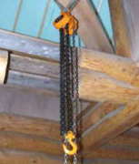
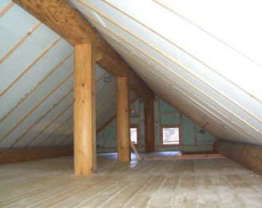
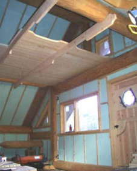
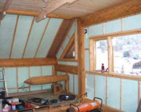
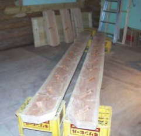
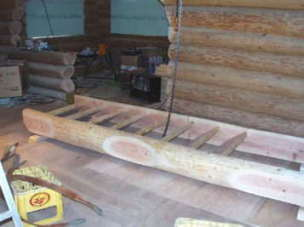
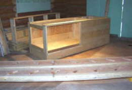
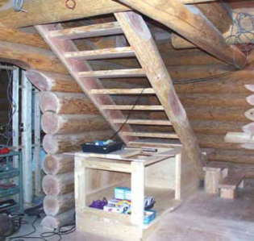

２０００． １月 |
 |
冬の寒さ、夏の暑さを防ぎ、少しでも快適に過ごすため天井、壁、床、それぞれに
断熱材（スタイロフォーム）を入れていく。（厚さ５０ｍｍ、３０ｍｍ）
 |
 |
|  |
階段は最後に残った４ｍほどのログを、半割にして親板にした。
踏み板は、窓の開口で切り落とした丸太を製材して加工。（５５ｍｍ厚）
|  |  |
踏み板が入るホゾ穴をあける まず下で組み立てたが、重くて動かせないので
チェーンブロックで上げていった。
|  |  |
階段完成